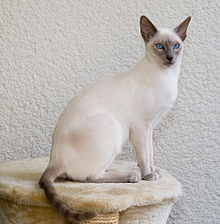
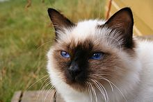

The Persian cat is a long-haired breed of cat characterized by its round face and short muzzle. It is also known as the "Persian Longhair" in English countries. The first documented ancestors . . of Persian cats were imported into Italy from Persia around 1620 |
 The Manx cat is a breed of domestic cat originating on the Isle of Man, with a naturally occurring mutation that shortens the tail . |
 the Egyptian Maus are a small to medium-sized short-haired cat breed. They are one of the few naturally spotted breeds of domesticated cat. The spots of the Mau occur on only the tips of the hairs of its coat. It is considered a rare breed |
The Turkish Van is a naturally occurring breed of domestic cat that originated in the mountains of modern-day Turkey, specifically in the Armenian Highlands. The Van is classified as a semi-long hair, but it has two lengths of hair, determined by season. In the winter, the hair is thick and long |
The Maine Coon is a large domesticated cat breed. It has a distinctive physical appearance and valuable hunting skills. It is one of the oldest natural breeds in North America. The breed originated in the state of Maine, USA, where it is the official state cat |
 The Siamese cat is one of the first distinctly recognized breeds of Asian cat. Derived from the Wichianmat landrace, one of several varieties of cat native to Thailand, the original Siamese became one of the most popular breeds in Europe and North America in the 19th century |
 The Ragdoll is a cat breed with a color point coat and blue eyes. Their form is large and muscular and their coat is silky soft and semi-longhair. Ragdolls were developed by usa breeder Ann Baker in the 1960s. They are best known for their docile and placid temperament and affectionate nature |
The Sphynx cat, or simply Sphynx , is a breed of cat known for its lack of fur. Hairlessness in cats is a naturally occurring genetic mutation, and the Sphynx was developed through selective breeding of these animals, starting in the 1960s |
|
The British Shorthair is the pedigreed version of the traditional British domestic cat, with a distinctively stocky body, dense coat, and broad face. The most familiar colour variant is the "British Blue", with a solid grey-blue coat, orange eyes, and a medium-sized tail |
The toyger is a breed of domestic cat, the result of breeding domestic shorthaired tabbies to make them resemble a "toy tiger" , as its striped coat is reminiscent of the tiger's |
 The Chausie is a domestic breed of cat that was developed by breeding a few individuals from the non-domestic species jungle cat to a far greater number of domestic cats. The Chausie was first recognized as a domestic breed by The International Cat Association in 1995 |
 The Cymric is a breed of domestic cat. Some cat registries consider the Cymric simply a semi-long-haired variety of the Manx breed, rather than a separate breed . Except for the length of fur, in all other respects the two varieties are the same, and kittens of either sort may appear in the same litter |
The American Shorthair is a breed of domestic cat believed to be descended from European cats brought to North America by early settlers to protect valuable cargo from mice and rats. According to the Cat Fanciers' Association, in 2012, it was the seventh most popular pedigreed cat in the United States |
The Norwegian Forest cat is a breed of domestic cat originating in Northern Europe. This natural breed is adapted to a very cold climate, with a top coat of long, glossy, water-shedding hair and a woolly undercoat for insulation |
The Burmese cat is a breed of domestic cat, originating in Burma, believed to have its roots near the Thai-Burma border and developed in the United States and Britain. Most modern Burmese are descendants of one female cat called Wong Mau, which was Burma to America in 1930 and bred with American Siamese |
 The Birman, also called the "Sacred Cat of Burma", is a domestic cat breed. The Birman is a long-haired, colour-pointed cat distinguished by a silky coat, deep blue eyes, and contrasting white "gloves" on each paw. The breed name is derived from Birmanie, the French form of Burma |